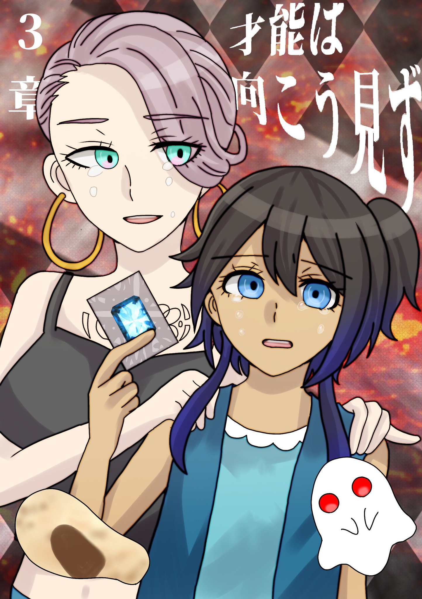
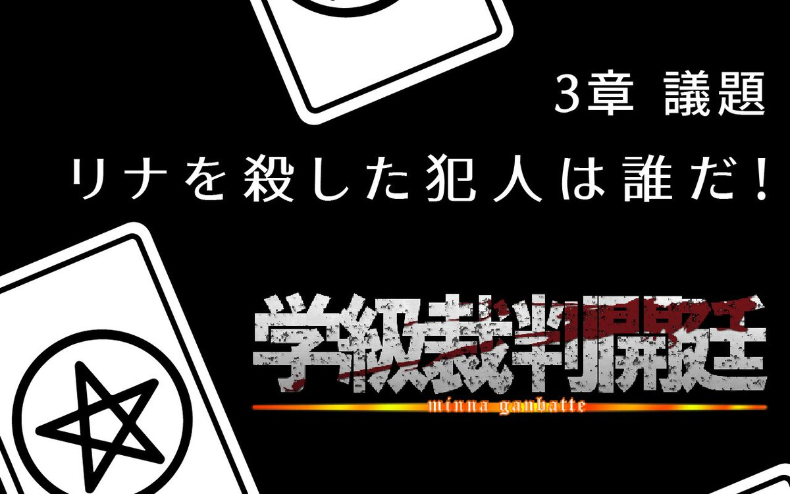
「学級裁判では犯人、クロは誰かを議論してもらいます。学級裁判のクロは生徒たちの投票により決定されます。クロを指摘できなかったらクロが卒業でクロ以外がおしおき、指摘できたらクロだけがおしおき、です！ ではでは張り切っていきましょー！！」
「まずは捜査の基本、遺体と現場ですネ！」
【A-1 コトダマ・遺体】
脚が折れていて、頭部が凹んでいるようだ。
【A-2 コトダマ・現場】
リナの周辺には特にめぼしいものは落ちていない。
【B-1 コトダマ・ナ・ン】
リナのそばに落ちていた。リナと共に落とされたのだろう。
【B-2 コトダマ・ナ・ン】
踏み潰された跡がある。誰かに襲われたかのようにぼろぼろだ。
「現場はこれくらいですか〜。そういえば、リナちゃんの遺体発見の直前、何か大きな物音がしたらしいですネ。彼女が落下した音でしょうか。どこから落ちてきたか検討がついた方はいらっしゃいます？」
【C-1 コトダマ・男子寮物置】
鍵はかかっていない。室内は特に変わった様子はない。
【C-2 コトダマ・男子寮物置】
窓が大きく開いている。
【D-1 コトダマ・男子寮物置】
天井に屋上へと続く扉がある。
「屋上！！あそこ、室外機の点検と用水路の泥掃除の時しか行かないんでマップにも載せてないんですヨ。まさか屋上に行ったんです！？」
【E-1 コトダマ・男子寮屋上】
綺麗に掃除されているのか、砂埃はなく、足跡らしきものは見つからなかった。
【F-1 提案】エク
リナクンとナ・ンの落下地点から推測するに、男子寮の物置から落下したでは？犯人は男子である可能性が高い、男子のアリバイを聞こー。
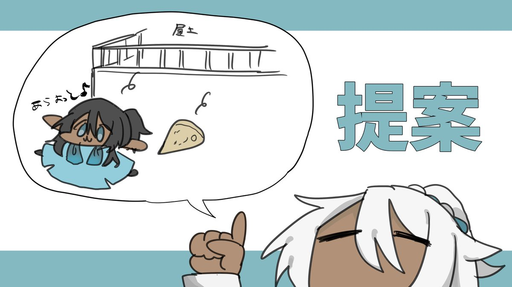
【F-2 反論】モハメド
男子寮の物置や屋上から落下したとは考えにくい。被害者であるリナは男子寮には入れないはずだ。呼び出すのは不可能だろうし、気を失った彼女を抱えて男子寮に連れ込むのは目立ちすぎる。
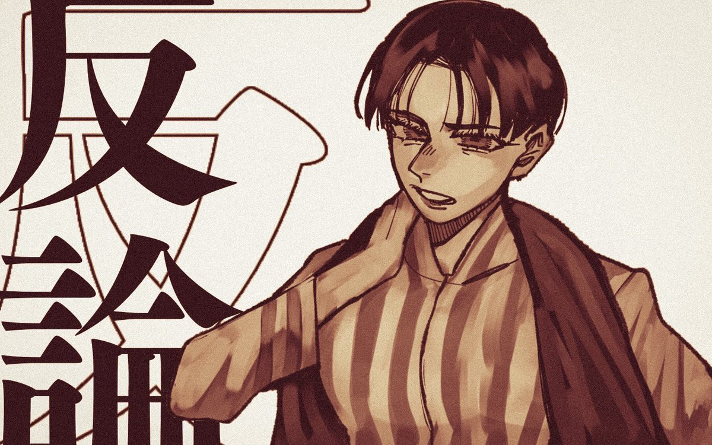
【G-1 コトダマ・男子寮屋上】
わずかに、手すりの塗装が剥がれている箇所がある。ロープが擦れたような跡だ。
【G-2 閃き】ヌール
気を失ったリナをロープで屋上まで引き上げたのではないだろうか
「ヌールちゃん天才〜！！ モノガネもその方が現実的だと思った！」
【H-1 証言】アーシャ
女子寮２階の廊下にナンの破片が残っていたんだ。ナ・ンはそこで襲われたんじゃないの？
【H-2 閃き】シン
ナ・ンは犯人がリナを殺そうとするところを見てしまい、止めようと思って負傷してしまったんじゃないだろうか。だとすれば、ナ・ンが襲われた場所がリナが襲われた場所だと考えられるし、ナ・ンは犯人を目撃したはずだ。
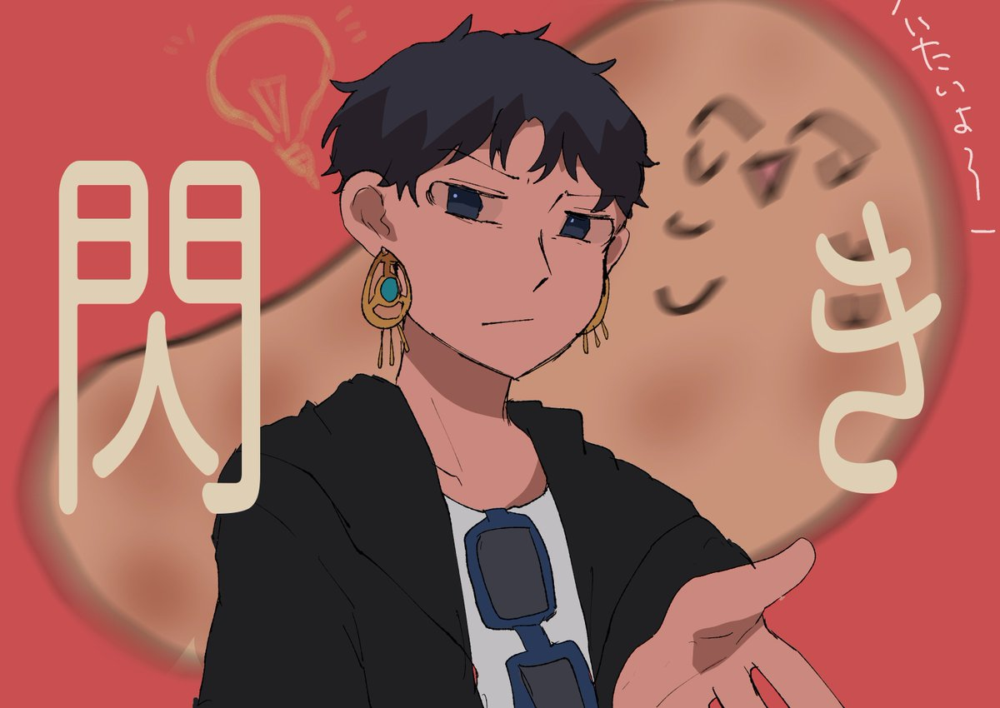
【H-3証言】ナ・ン
犯人と思しき人物を見たが、犯人が誰なのかはモノガネに口止めされているため言うことはできない。
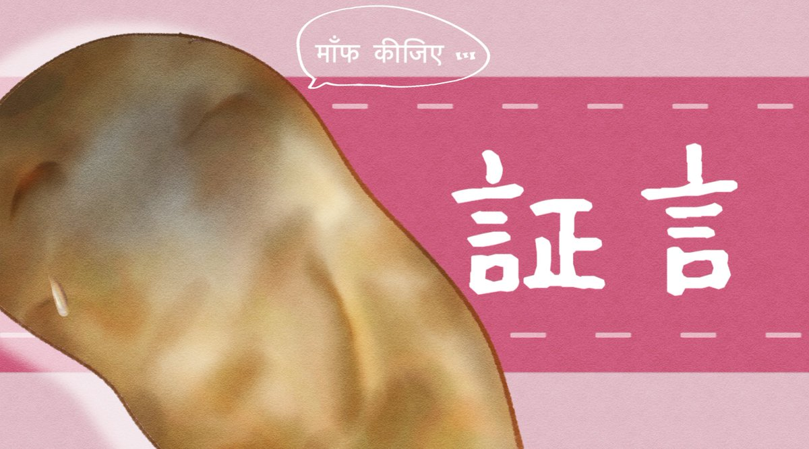
「神が正解に導いちゃだめです！！裁判にならないじゃないですか」
「とはいえ有益な情報がはいりましたネ。女子寮を調べた人…いますよネ！警報音と引き換えに得たものを教えてくださいませ！」
「直で犯人を聞くことはできませんが、有益な情報がはいりました！ 女子寮を調べた人…いますよネ！警報音と引き換えに得たものを教えてくださいませ！」
【I-1 コトダマ・女子寮物置】
天井に屋上へと続く扉がある。
【I-2 コトダマ・女子寮屋上】
綺麗に掃除されているのか、砂埃はなく、足跡らしきものは見つからなかった。
【I-3 コトダマ・女子寮屋上】
わずかに、手すりの塗装が剥がれている箇所がある。ロープが擦れたような跡だ。
【J-1 推理】
女子寮から男子寮へロープをつたって移動したのではないだろうか。ヌールの身体能力なら、女子寮の屋上から男子寮の屋上へ移ることができると思う。
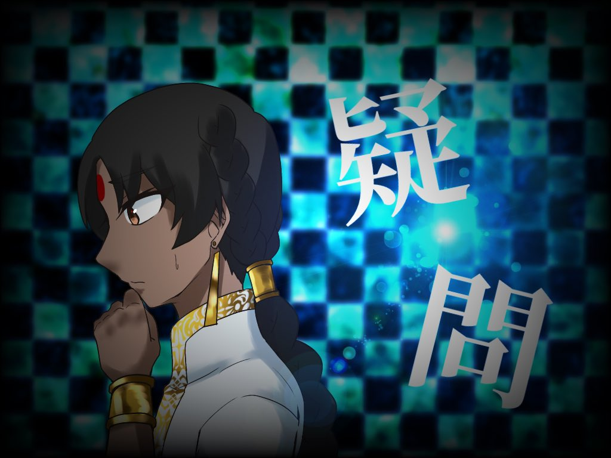
【J-2 同意】
普段のヌールが人を殺すなど考えられないが、絶望病にかかっていた彼女ならありえると思う。どんな症状だったかは分からないが、人を殺したくなる症状だった可能性もある。
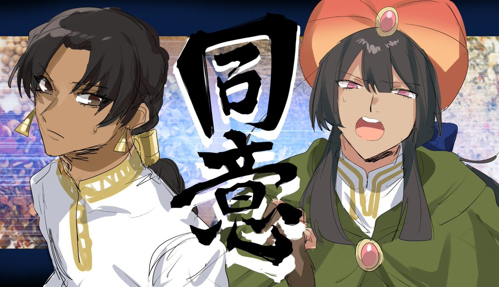
【J-3 反論】ヌール
私は極力感染者には近づかないようにしていたから、絶望病などというふざけた病気にはなっていないはずだ。人を殺したくなる症状にも心当たりがない。
【J-4 推理】
こう考えると辻褄があわないだろうか。ヌールは女子寮にいたリナとナ・ンを襲って失神させ、彼女らを抱えて女子寮の屋上へ移動。ロープを伝って男子寮の屋上へ渡り、そこから地上に落とした。その後、再度ロープを伝い女子寮に戻ってロープを回収。それから遺体に集まった他生徒と合流した。
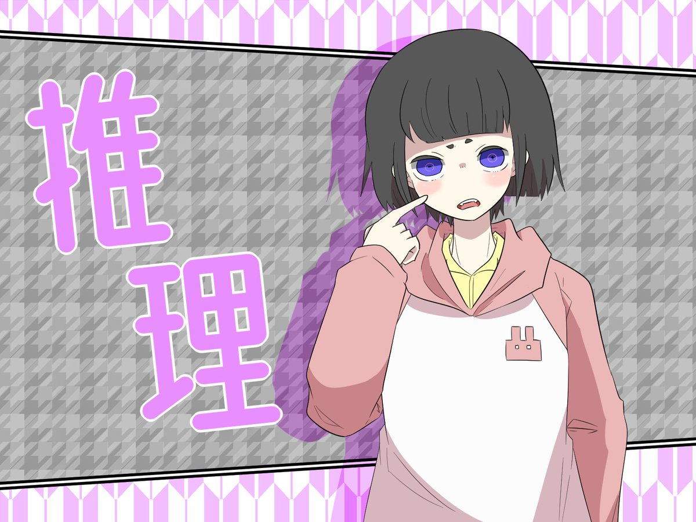
✦理論武装 開始
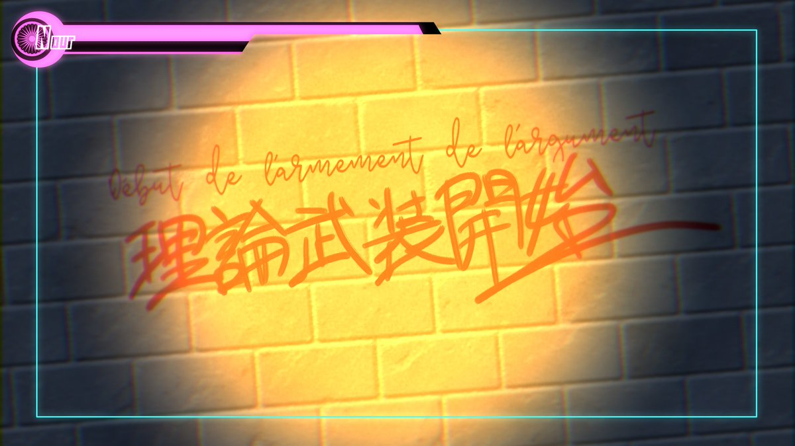
【理論武装1】
「私にはリナを殺す動機がない」
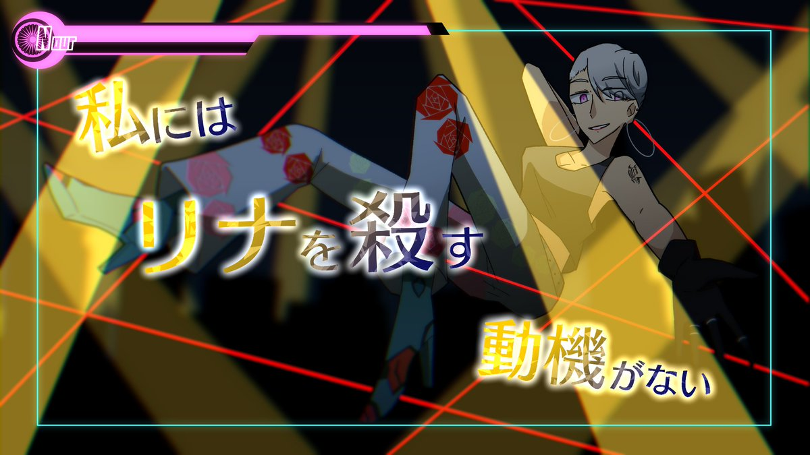
【理論武装2】
「私がやったという確固たる証拠もないでしょ」
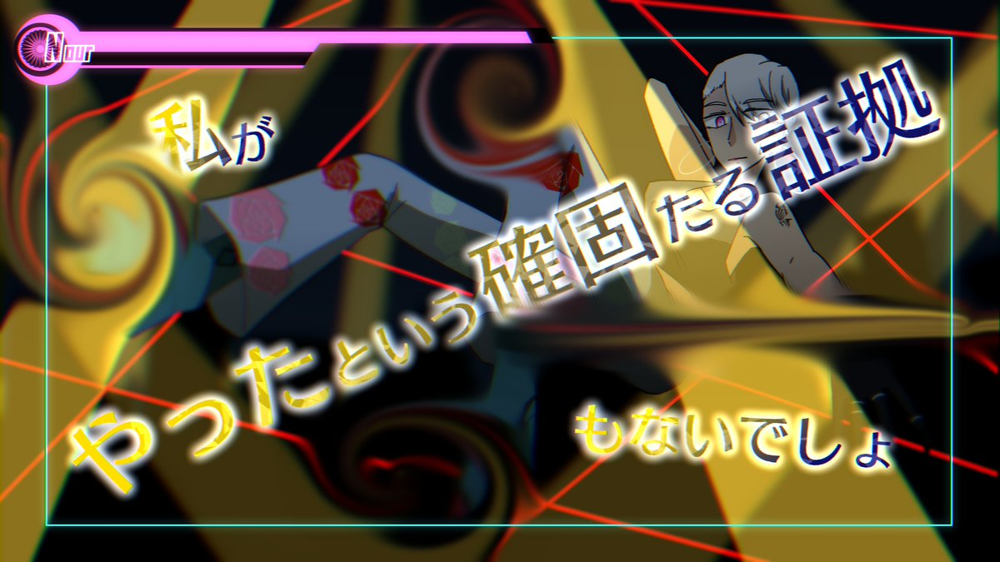
【理論武装2】
「大体、そんな曖昧な推……」
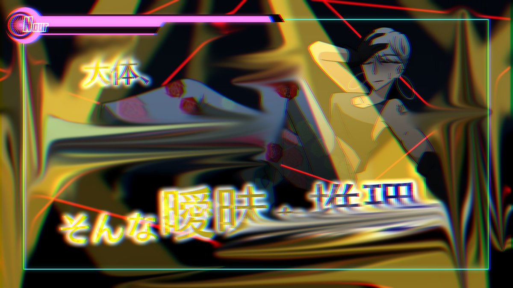
＊突然、反論していたヌールの体が揺れ、その場に倒れた
＊と、裁判場の扉が慌ただしく開く
アディティ「ヌール様！！あのときモノガネーシャ様が配った薬、飲んでませんね！？」
ヌール「(顔を歪めて咳き込み)」
ヌール「の、めるわけっ、ないでしょ……っ…あんなあやし、いくすり……」
アディティ「熱が高い……モノガネーシャ様、こちらはしばらくお時間をいただきます」
＊呼吸の荒い彼女にアディティが駆け寄り、なだめながら薬を飲ませようとしている
「あらら、どうしましょう。ひとまずはアディティに彼女を任せましょか」
「こっちはもう少し議論を進めましょう。ほら、ヌールちゃんが動機がないとか証拠がないとか言ってたじゃないですか。反論できる要素がないと、ネ」
【K-1 コトダマ・校舎】
特に変わったところはない
【K-2 コトダマ・体育館】
特に変わったところはない
【K-3 コトダマ・ニコニコハウス】
特に変わったところはない
【K-4 コトダマ・中庭】
特に変わったところはない
【K-5 コトダマ・焼却炉】
特に変わったところはない
シン｢変わったところなさすぎない？｣
【L-1 コトダマ・リナの自室】
リナが記したであろうメモを見つけた。
「12月18日 私は殺される
クロは絶望病の薬を飲まずに裁判終盤で倒れる人だ」
「ほう。さすが超高校級のタロット占い師！というところでしょうか。自分の未来も見えていたんですネ」
「とはいえ、これはただの予言でしょう。彼女の占いは確かにすごいですが、こんなふわふわしたものを信じて大丈夫ですか？ とりあえず投票します？」
＊アディティに手当てされていたヌールの顔色がよくなってきたようだ
＊彼女はゆっくりと息を吐いて、立ち上がった
【M-1 自白】ヌール
リナを殺したのは間違い無く自分だ。彼女は私の持っているダイヤモンドの隠し場所や金庫の暗証番号まで言い当て、恐ろしくなった。彼女はこのことは誰にも言わないと言っていたが、どういうわけかその時はなにも信じられなくてたまらず恐ろしくなって、今までの盗みも全てバラされるんじゃないかと…それで、殺してしまったの。悪かったわ。
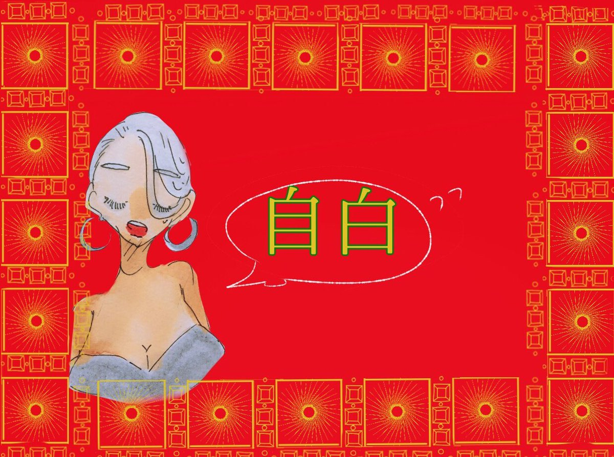